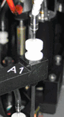
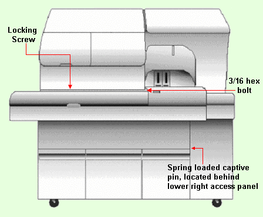
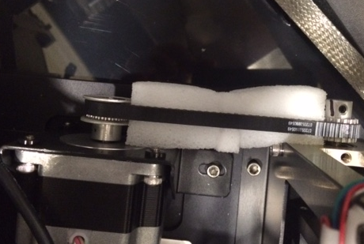
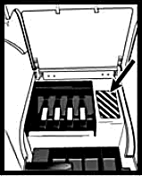

This procedure describes how to install a DxI Immunoassay System. Perform this procedure if a DxI Immunoassay System has not been installed previously at this site.
Required or optional parts and tools for installation and assay verification studies:
DXI Installation Quick Reference Guide.pdf
- This document is an outline of the installation process for quick reference. The quick reference guide does
not replace the service manual instructions below.
Alignment tool kit, specialty
Key, pipettor interlock switch bypass (two)
Field service tool kit for Access and DxI
Gloves, rubber, talc free
Customer supplied material (transfer pipettes, pipettors, etc)
Ensure instrument supplies are present and substrate equilibrated
Note:
Instrument no longer manufactured with liquid waste drawer. External drain kit or liquid waste drawer must be installed.
Part number revisions might not be current as listed. If a part is unavailable in Oracle, then retry using a higher revision.
Other hardware components required for 220-V AC requirements outside the U.S. are not listed.
When to perform:
Perform this procedure during the initial installation of the DxI instrument.
Time to complete:
The total amount of time required to perform a complete installation is approximately one day.
Verifying inventory:
Confirm that all hardware, reagents, supplies, and instructional materials are available. Installers outside the U.S. must accommodate for the 220-V AC power requirements.
Connect the power, serial, and video cable connectors to the touchscreen monitor.
Note: Some of the cables have been preassembled and are connected to the monitor or were routed during the peripherals cart assembly.
Connect the USB printer cable to the printer.
Note: Older PCs with a parallel printer output connector might not support USB printer operation. Use the parallel cable connection to the printer.
If a network printer will be installed to the printer network hub (UCTA or LAS), then connect a network cable from PC network port 3 to the printer network hub (UCTA or LAS).
If a network printer will be installed but there is no network hub, then connect to the printer using a crossover network cable.
Connect a power cord from the printer to the wall outlet and then power on the printer.
Note: If a PC backup UPS is required by owner, do not connect the laser printer power cord to the UPS. It overloads the UPS and causes a beep when printing.
(Optional: Install UPS)
Connect the power cord from the UPS to the wall outlet and power on the UPS.
Note: PC backup UPS is no longer included in the installation kit. Option: obtain an UPS from BCI (N/A OUS) or locally source one - must meet BCI UPS Power Ratings: Output Power Capacity => 1300VA or 780 Watts, Output Voltage= 120V, Input Voltage= 78 - 147 (120V Nominal). Refer to the
Peripherals: Installing UPS Toshiba procedure,
Peripherals: Installing UPS DS 3000b procedure, or
Peripherals: Installing UPS ABCDEF3000 procedure for instructions on connecting the large UPS.
Connect the cables of the peripherals to the connectors on the back PC.
Connect the power, USB, and video cable connectors to the touchscreen monitor.
Connect the cables to the connectors on the back of the PC.
Refer to the configuration diagrams below.
Windows 10 PC
Location
Connect this item...
...to this item
FRONT
External power pack
PC power connector
REAR
External CD drive
USB 3.0 connection (one of four blue USB ports)
REAR
Monitor touch cable
Printer
Mouse
Keyboard
USB backup drive
USB barcode reader
USB 2.0 connections (USB ports are
not blue - six available)
Note: If more than six ports are needed, use an available blue USB 3.0 port instead
REAR
Network cable from network hub
Ethernet connection 1
REAR
LIS serial port cable
COM2 connection
REAR
Video cable
HDMI port
REAR
RMS cable (optional)
Ethernet connection 2
Connect the PC and the video monitor power cords to the wall outlet.
Note: If an UPS is required by owner, connect the PC and video monitor power cords to the UPS backup power connectors (not the surge-protected-only connectors).
Tighten all the connector hold-down screws, attach the cable-ties, and neatly route the cables.
Connect the cable from network connection 1 on the PC to the network connection labeled PC on the back of the DxI AU.
Review and complete all current open modification (Mod) requirements for the system as needed during the installation to prevent duplicating any verification work.
Caution: Applicable Mod's might have been released after the instrument was manufactured.
Apply power to the system.
Prior to connecting the power source, ensure that:
Main instrument power switch is in the Off position.
At the Power Distribution PCB, verify that the "All DC power except reagent coolers" toggle switch is on the
Off position, and the "Reagent coolers" toggle switch is in the
On position.
Instrument main front covers are open and interlock bypasses are inserted into the two main cover interlock switches.
Rear storage cover is removed.
Reagent storage gripper is moved to the home position (far lower left).
SPU and reagent storage interlock switches are taped down to the closed position.
Connect the instrument power cord to the rear of the DxI using the two screws and clamp provided.
Connect the instrument power cord to the large dedicated AU UPS or to the wall power outlet if a large system UPS is not available.
Power on the main instrument power switch.
Power on the printer, monitor, and PC.
Note: When rebooting the Privacy & Security compliant Windows 8 or Windows 10 PC, you must enter security password "Access2Admin" when prompted to launch Windows.
Install the DxI system software.
Insert the software CD into the CDROM drive on the PC.
Note: The software installation program should start automatically. It may take up to 3 minutes for the program to launch. If the program doesn’t auto launch, it can be manually started by selecting the Computer icon on the desktop and then double clicking on the D: DVD drive.
Proceed through the installation dialog selecting Next and Yes as needed. Select the finish button when complete to restart the console PC.
Note: When rebooting the Privacy & Security compliant Windows 8 or Windows 10 PC, you must enter security password "Access2Admin" when prompted to launch Windows.
If an
Unknown Processes Running message is displayed after the PC reboots,
then select
OK to continue.
Insert the APF CD into the DxI drive when prompted, then select
OK
to install the APF.
Remove the Made-in-Chaska seals from the reagent pipettors.
Manually move each pipettor forward and backward. Confirm that the pipettor guide chains are not rubbing against each other or hitting into the other pipettors and that the strain-relief loops are not contacting the motors. Make any necessary adjustments.
Check the movement of the sample, incubator, and wash pick-and-place assemblies for smooth motion and freedom from interference with cables routed above these assemblies.
Install aspirate probe 1 in opening A1 on the dispense probe plate and finger-tighten the fitting.
Figure 5: Aspirate probe 1 shipping location
Figure 6: Aspirate probe 1 installed

Note:
Aspirate probe 1 is inside a plastic bag that is taped to the substrate pump bracket.
Installed correctly, the fitting is flush with the plate and the probe pulls up and springs back into position.
Verify that the substrate probe and all aspirate and dispense probe fittings are finger-tight. Verify that the aspirate and dispense probe tubes are not twisted together or able to catch on any wires or parts, especially the substrate insulation jacket.
Open the SPU.

The SPU is hinged on the left side. The right side is released and can be swung out from the instrument to approximately 45 degrees.
Open the upper left cover of the instrument.
Loosen the locking screw.
The locking screw prevents the SPU from swinging outward from the instrument. It is not necessary to remove the screw because the SPU plate is slotted.
Remove the 3/16-in hex bolt located near the right end of the SPU cover.
Open the lower right access panel on the front of the instrument.
Pull the spring-loaded captive pin that holds the panel (located under the SPU) to the frame.
Grasping the SPU near the right end, swing the right end away from the instrument.
Warning: The SPU off-load area slides forward and rearward as the SPU is swung in and out. To prevent damage to the SPU or the off-load area, confirm that nothing obstructs the movement of the off-load area as the SPU is moved.
(For China and Canada Only.) On the front facing the edge of the Framus assembly, install the Chinese and French labels adjacent to the existing English label.
Note: The labels are in the DxI Installation Kit.
Prepare the reagent storage module.
Note: Before performing the following substeps, remove the foam located between the SPU Presentation Tray motor belt and shaft.

Remove the SPU lower panel.
Remove the reagent storage module cover.
Remove the tie-wrap and protective foam from the reagent pack gripper.
Note: Inspect all reagent storage rods or shafts and lubricate them if necessary.
Move the gripper to the home position located at the lower left corner.
Note: Leave the reagent storage module open to view the operation of the reagent pack gripper.
Prepare the fluidics module.
Remove each of the precision and wash valve caps, crack the rotor loose from the stator, and then reassemble the valve caps.
Engage the aspirate peristaltic pump tubing.
Perform these steps to install the cassettes.
Locate the cassettes (most commonly found in the bulk feeder).
Ensure the tubing is positioned in the cassette with the retainer clips in the cassette teeth
Hold the cassette between the thumb and forefinger.
Verify the black tab on the cassette is on the left and the spring is on the right, when facing the installed pump.
Insert the right side of the cassette into the pump, until it is seated fully in the pump.
Rotate the left side of the cassette into the pump, until it clicks into position.
Press on the center of the cassette to ensure that it is seated fully in the pump.
Ensure the tubing below the vacuum dampeners is not kinked. Adjust the dampener position, as required.
Close the SPU.
The SPU is hinged on the left side. The right side is released and can be swung out from the instrument to approximately 45 degrees.
Warning: The SPU off-load area slides forward and rearward as the SPU is swung in and out. To prevent damage to the SPU or the off-load area, confirm that nothing obstructs the movement of the off-load area as the SPU is moved.
Grasping the SPU near the right end, swing the right end toward the instrument.
Pull the spring-loaded captive pin to attach the panel (located under the SPU) to the frame.
Close the lower right access panel on the front of the instrument.
Insert the 3/16-in hex bolt.
Tighten the bolt that holds the SPU from swinging outward from the instrument (locking screw).
Close the upper left cover of the instrument.
Note: Initialize the instrument after opening and closing the SPU, because a switch is actuated when the SPU is opened.
(Optional) Install an LAS sample pipettor gantry.
If the instrument was shipped without a sample pipettor gantry, then install the LAS sample pipettor gantry that shipped with the instrument.
If the instrument was shipped with a standard sample pipettor gantry and a long LAS gantry will be installed, then remove the sample pipettor gantry and install the LAS sample pipettor gantry that was shipped separately.
On the Power Distribution PCB inside the right side of the instrument, turn the toggle switch for "All DC power except reagent coolers" to the
On position.
Note: At this time, the interlock bypass keys (red dogbone tool) can be be inserted into the two cover interlock switches.
(Optional) Configure the LAS sample pipettor (if an LAS sample pipettor was installed).
Select
Configure
> PC Admin > System Admin > Instrument Service, enter password
Access2Support (case sensitive) and select
OK.
Select
Replace Sample Pipettor, then select
Execute.
Select
Yes to confirm selection of the new LAS sample pipettor.
When prompted to do so, power off the DxI (AU) main power switch, and then select
OK.
Set the
All DC Power switch on the main power distribution PCB to On.
Power on the DxI (AU) main power switch.
Select
Cancel to close the
Instrument Admin window.
(Optional) Align the LAS sample pipettor (if an LAS sample pipettor was installed).
Note:
Do not perform the alignment to the LAS track position at this time. Perform this alignment after connecting the instrument to the track.
Complete any required sample pipettor adjustments prior to aligning the sample pipettor. Refer to the
SP: Adjusting Sample Pipettor procedure.
Ensure the sample pipettor probe is not bent and perform the sample pipettor alignments.
Place two wash buffer containers into the drawer with the openings positioned closest to the front of the drawer.
Slide the shims onto the containers' necks.
Remove the caps and the inner seals from the two new wash buffer containers.
Insert the cap and draw tube assemblies into the wash buffer containers and tighten the caps.
Close the wash buffer supply drawer.
For the old wash buffer drawer with weight sensors.
Open the wash buffer supply drawer.
Unwrap the cap and draw tube assemblies.
Place two wash buffer containers into the drawer with the openings positioned closest to the front of the drawer.
Remove the caps and the inner seals from the two new wash buffer containers.
Insert the cap and draw tube assemblies into the wash buffer containers and tighten the caps.
Connect the supply tubes to the cap fittings.
Inspect the tubing that feeds the drawer and ensure it is not damaged or kinked.
Close the wash buffer supply drawer.
Note: When a wash buffer container empties during instrument maintenance tests, save the container to use for calibrating the wash buffer drawer.
Load vessels into the bulk feeder (1 1/2 bags).
Open the solid waste container door and install a waste bag in the container.
Note: Waste bags are found in the Customer Starter Kit, with the other consumables.
(If the liquid waste drawer is installed) Open the liquid waste container drawer.
Ensure there are two liquid waste containers in the drawer and that the waste caps and tubing are connected correctly.
Inspect the tubing feeding the waste drawer and ensure the tubing is not damaged or kinked.
Close the liquid waste drawer.
Initialize the reagent storage module.
Press the
Windows key, select the Remote Desktop icon or type
remote and open the Remote Desktop Connection program.
Type in
192.168.2.4 into the Computer field and select Connect.
Enter user for User Name and
tech for the password if prompted.
If prompted at the RDS warning screen, check the box for "Don't ask me again for connections to this computer" and select
Yes.
Note: For Windows 8, the default console IP address is 192.168.2.3 and the AU IP address is 192.168.2.4. Neither IP address changes during the software load process.
In the AU remote connection, open the C:\AU\TestReagentIF.exe application.
In TestReagentIF, select
Connect > Clear Status, and then select
Zero X > Zero Z for the reagent gripper encoders.
Initialize the instrument and configure the user interface.
If a dual-gantry pipettor gantry is installed in the instrument for use with a UCTA integrated system, then:
In the user interface select
Configure > PC Admin > System Admin > Integrated System Setup, enter the password
Access2Support, and then choose the type of integrated system from the list.
Press the
Windows key, type
regedit
and open the regedit.exe program.
Select the registry key.
In Windows 8 select
HKEY_LOCAL_MACHINE > Software > Beckman > NexStep > Workgroup.
In Windows 10 select
HKEY_LOCAL_MACHINE > Software > WOW6432Node > Beckman > NexStep > Workgroup.
Right click on
DxIToDxCServerIP and select
Modify.
Enter
134.217.96.184 and select
OK. If using the CTS (closed tube sampling) feature enabling DxC networking then set the IP address as shown.
DxI 1 IP 134.217.96.184
DxI 2 IP 134.217.96.185
DxI 3 IP 134.217.96.186
DxI 4 IP 134.217.96.187
Note: The CTS feature monitors up to four networked DxC instruments and allows a sample tube to be loaded on multiple DxCs while only being pierced once.
Verify that
DxIToDxCDefaultLocalIp is set to
DefaultLocalIp.
Close the Registry Editor.
Note:
Ensure the Local Area Connection 3 is set to the same address as the DxIToDxC Server IP (134.217.96.184).
For two integrated systems networked, this address can be 134.217.96.185. Check the Chem console for the specific address. Ensure that the PC network identification is set to xxserialnumberxx_PC or the DxI status will not go to Standby. Refer to the
Drawing - Network Connectivity - UCTA / Integrated System drawing for network cable connection details.
Select
Diagnostics > Initialize in the user interface with
All Positions and
Remap selected so that the system enters
Ready mode.
Note:
Substrate Bottle Selector Valve is Out of Position errors occur when substrate is not loaded. Confirm that two substrate bottles are loaded on the instrument.
Pipettor failed to wash errors occur during initialization when the wash tower peri-pump is jammed.
Reinitializing typically corrects the
Buffer reservoir not filling errors, which gives the reservoir more time to fill.
Rebooting the instrument can resolve the
Pipettor priming errors that occur during initial startup.
Troubleshoot instrument errors accordingly.
Verify that the upper buffer reservoir is filled and that the retainer screw on the reservoir float switch is installed.
If the air compressor cycles more than once per minute, inspect the pneumatics hardware for air leaks, especially at the air compressor.
Note: An interaction between the LED status panel and the newer MCC3 PCBs (with red LEDs) causes the compressor to cycle on once per second when the MCC power is off (covers are open). This behavior is considered normal.
Configure the user interface.
Note:Windows 8 may require adjusting the screen resolution to make the user interface appear as a full screen. Perform the following steps to adjust the resolution.
Press the
Windows key, type
Display and select
Settings option.
Open the
Change display settings
icon.
Change the resolution to 1024 x 768, select Apply, and OK.
Note: If the user interface is abnormal (has missing or misaligned display icons), then perform the following steps to return the user interface back to normal.
Press the
Windows key, type
Display and select
Settings option.
Open
Display icon.
Select
Smaller - 100% (default) and click
Apply.
Note: If the monitor has blank display areas at the top and bottom of the user interface screen, then perform the following steps to eliminate the areas.
Press the
Windows key, type
graphics and open the
Intel HD Graphics Control Panel program.
Select
Display and then check the
Scale Full Screen option.
Click
Apply and
OK.
Note: Additional display settings are available in the Intel Graphics program which may resolve display features on Command Central KVM connections.
Select
Configure > System Setup and set system ID, language, and local date and time.
Configure > System Setup > Reports Setup and configure the printer and reports to print, and enter lab information.
Select
Configure > System Setup > Rack ID Setupto configure special tubes.
Select
Configure > LIS
to configure the LIS (Local = On, Global = On, Query for tests). (if applicable)
Select
Configure > PC Admin to configure Auto Delete, schedule a backup, or run an immediate backup.
Select
Configure > PC Admin > System Admin > System Setup > Remote Management
to enroll in RMS.
Note:
The password is Access2Support.
The USB backup drive must be connected to the PC when the user interface launches, otherwise the UI does not detect it and there is a
Can't find the file specified error.
Print a print screen and a test result report to verify printer operation.
Verify the ultrasonic transducer settings.
Check that the transducer temperatures are within specification (37 °C ±2 °C) and adjust as needed.
Perform the ultrasonics adjustment on each pipettor.
Check the operation of the three fans inside the reagent storage module. Replace any fans that are not operating.
Load a reagent pack. Observe the loading process and confirm that the gripper moves the pack without bumping or dropping it.
Complete the nest verification routine by selecting
Diagnostics > Subsystem Diagnostics
> Reagent Storage > Start.
Observe the placement of the reagent pack in the storage nests or slots. If the placement of the pack is incorrect, then realign the reagent storage module.
Note: Refer to the
RS: Aligning Reagent Gripper X- and Z-Axis procedure. Under normal operation, the gripper should place the pack at the same level as the nest, without pushing down on the nest, and may release the pack onto the nest from a step above the nest.
Remove the reagent pack.
Remove the tape on the interlock bypass switch on the reagent storage module cover and replace the cover.
Verify the vessel handling using the vessel exerciser. While the exerciser is running, visually verify the alignments to the pick-and-place modules and wash arm movement.
Note: If a vessel exerciser is canceled before completion, then initialize the system with
Clean-out of All Positions option selected to remove any remaining vessels from the system.
Select
Diagnostics > Device Diagnostics > Exerciser and perform these reaction vessel exercisers.
Vessel Exerciser
Reps
Approximate Run Time
Dilution Route
100
5 minutes
Sample Route
100
10 minutes
Reaction Route 1
50
8 minutes
Reaction Route 2
50
8 minutes
If any exerciser fails, make the required adjustments or alignments, and then repeat the vessel exercisers.
Initialize the system with
Clean-out of All Positions selected to remove any vessels left in the system by the exerciser.
(Optional) If the instrument will be connected to a lab automation system, attach the LAS housing to the upper rear cover.
Remove the LAS access panel from the upper rear instrument cover, and attach the cover to the instrument.
Remove the three brackets from the housing for the LAS pipettor, and attach the brackets to the upper rear cover using six 8/32-in x 7/8-in screws.
Attach the housing to the upper rear cover using four 8/32-in x 1/4-in screws.
Inspect the fluidics system for leaks and visually verify pipettor alignments to the wash tower during priming.
Ensure all tubing is routed correctly.
From the
Main Menu, select
Diagnostics > Prime Fluidics > Select All. Change the number of cycles for all devices to 16 and start priming.
Note: The system automatically performs a substrate drawback calibration during the priming process.
Inspect for leaks in these locations.
Fluidics reservoir
Fluidics drawer
All reagent and sample pump circuits
Substrate pump load circuit
Duck-bill valve area
Behind lower right rear cover
Connect Luminometer cable
Change the in-use Substrate bottle.
In the user interface, select
Supplies > Change In-Use Substrate Bottle > OK
Prime the Substrate system, select
Diagnostics > Prime Fluidics and place a check mark next to
Substrate and
Calibrate Drawback. Set the number of cycles to 16 and select
Prime.
Calibrate the fluidics sensors.
Calibration all the pressure sensors. Select
Diagnostics > Device Diagnostics > Analog Devices > Sensor Calibration
> Pressure > Determine All Curves.
Note: Inspect and visually confirm sample and reagent pipettor alignments to carriages and sample wheel (centered on vessels).
Calibrate the buffer flow sensor. Select
Diagnostics > Device Diagnostics > Analog Devices > Sensor Calibration > Wash Buffer Flow and follow the on-screen instructions.
Note: Observe the fluid height in the RV during the calibration. Increasing fluid height may indicate a leak in the pipettor fluidics.
Note: The drawer calibration requires one full and one completely empty buffer container and liquid waste container. The calibration of the wash buffer drawer can be performed at a later time when an empty/near empty wash buffer container is available.
(Optional) If any alignments appear to be visually incorrect during observations, verify alignments.
Move the aspirate probe plate to the RV bottom position and check alignments.
Ensure the aspirate probes spring downward freely after being pulled upward.
Check that the probe tube routing does not pull up on the probes or snag on other devices. Perform any necessary adjustments.
Ensure that the aspirate probe plate is mounted securely. If the plate has loosened during shipping, tighten and align the plate.
Manually move the RV supply shuttle forward to the dispense position while pushing lightly toward the bulk feeder. Verify that the shuttle does not strike the bulk feeder.
Check or perform alignments only to correct problems that arise while running the instrument.
It is not necessary to evaluate all alignments during installation. The system alignments are set and tested during the manufacturing process. Use the CF process to report to Chaska any need to realign.
Verify the operation of the system.
(Optional) Run the daily clean routine.
Note: (Before proceeding) For
DXI 800 systems: Program and run system check, carryover, and low volume matching
at the same time, prior to loading the sample racks. Low volume matching cannot be programmed while the instrument is running, therefore ensuring all samples are programmed prior to loading will reduce the amount of time required for verification runs to complete. For
DXI 600 systems: Program and run system check and carryover at the same time. These tests will need to finish and system in ready before running DXI low volume test.
Run the system check. When completed, print the report and place a copy in the customer maintenance and service log.
Note: Advise the customer that the utility assay runs every four hours, when the system is not running samples.
Remove all interlock devices and tape from the cover interlock switches (two upper front, SPU, reagent storage).
If the local language is not English, remove the English reagent pack caution label and apply the correct local language label to the reagent load tray cover.

Close and replace all the covers, including the SPU lower panel and the lower rear pneumatics cover.
Remove the protective wrap on the SPU Plexiglas® cover.
Configure and test the bar code labels and the LIS interface for the account.
Test the RMS PROService functionality (if applicable).
(Optional) Contact Technical Support to have them confirm the RMS connection.
Train the customer how to replace the duck-bill valve and emphasize the importance of performing this maintenance procedure regularly (if necessary).
Create an immediate backup.
Clean up.
Unload all sample racks from the AU.
Wipe the exterior of the AU with a moistened cloth. Use the cleaner that the lab routinely uses.
Note: In the absence of a preferred laboratory disinfectant, use a bleach solution containing approximately 500-ppm available chlorine. Using standard household bleach, 500-ppm available chlorine is a 1/100 dilution in DI water. Bleach solutions stronger than 500-ppm available chlorine are corrosive and can damage the exterior of the instrument.
Wipe up any precipitation from previous leaks or spills.
Ensure that all covers fit snugly and all hardware is in place.
Complete the documentation.
Assemble all system manuals for the customer.
Print the alignment report and a final copy of
"specific.ini" file and place it in the customer software binder with the system software CD. Also copy "specific.ini" to E: back up drive
Sign and date all reports. Leave the originals with the instrument.
Review the completed checklist in the install record document with the customer and have the customer sign the document. Place a copy in the installation documentation section of the Installation Implementation Guide.
Give to the customer any documentation (e.g. stuffers) that shipped with the instrument.
Complete a service request or document the service activity in the correct system. Place a hard copy of the report or service record in the service section of the maintenance and service log.
Report any major hardware problems found during the installation to the local support organization.
Following the instrument hardware installation, assay verification will be performed as outlined in the UniCel DxI Installation Implementation Guide
986184C.pdf
.


 Note: There is a visible tag attached to the transfer pump tubing. This tag notes further action is required for the waste drainage system. Refer to Fluidics: Installing External Drain Kit and DxI Fluidics: Installing Liquid Waste Drawer procedures.
Note: There is a visible tag attached to the transfer pump tubing. This tag notes further action is required for the waste drainage system. Refer to Fluidics: Installing External Drain Kit and DxI Fluidics: Installing Liquid Waste Drawer procedures.